图 17.16 同源异型突变 bithorax 基因中3个不同的变异导致果蝇形成额外的一个带有对翅的胸节。与图 17.6 的正常果蝇相比较。

图 17.17 果蝇的同源异型基因 同源异型基因复合体或者 HOM 复合体，这些基因分为两簇：Antennapedia 复合体（前端）和 bithorax 复合体（后端）。
图 17.1 未来鱼经历胚胎发育的组图 在一个透明的鱼卵中，一个单细胞变成了数以万计的细胞，并形成眼、鳍、鳃及身体的其他部分。
第16章从个体细胞的角度研究了基因的表达，一个细胞可以采用不同的机制来控制不同基因的转录。现在我们要扩展视角并着眼于由一个细胞发育成为多细胞组织时所带来的非凡挑战。在发育的过程中采用了多种转录方式，使得不同的细胞沿着不同的路径发育，因此编制成一个不可避免的复杂因果网（图 17.1）。正是因为它的复杂性，所以在发育过程中需要高度的精确性。本章主要是探索多细胞组织控制发育以及实现其精确性的机制。
所有的3类多细胞生物（真菌、植物和动物）通过协调的基因表达而实现细胞特化。也就是说，不同的细胞在不同时间表达不同的基因。为了很好地理解发育，我们有必要关注细胞如何决定哪个基因需要激活，以及什么时候被激活。
在真菌中，特化的细胞大多局限于生殖细胞。在担子菌和子囊菌（即所谓的高等真菌）中，特定的细胞产生激素来影响其他细胞，但是所有真菌的模式都十分简单。在其生活史的绝大多数时期，真菌有一个二维的实体，它由长的细胞构成，细胞之间没有完全隔离开。真菌的成熟主要是一个生长的过程而不是特化的过程。
植物的发育更加复杂，成熟的个体有许多特化的细胞构成组织和器官。植物发育的一个特点是灵活性，随着植物的发育，组织的精细排布很大程度上受到环境的影响。
动物的发育是复杂的，而且受到严格的调控，其中分化细胞通过对环境很不敏感的机制产生特定细胞类型的排布。作为深入研究的课题，动物发育在最近的几十年内已经获得很好的了解。
这里我们将注意力集中到4个已经得到了广泛研究的发育系统上，它们是：①具有十分复杂组织的动物——哺乳动物；②具有比较复杂发育周期的动物——昆虫；③简单的动物——线虫；④显花植物（图 17.2）。
为了进行发育研究，我们将首先考察3种不同生物的发育全过程，以便能够根据全过程中的不同点进行分类，并揭示潜在机制中的基本相同点。我们先从脊椎动物的发育过程开始，因为在动物当中它是最容易理解的；然后研究完全不同的昆虫发育过程，遗传学家已经能使我们获得有关其发育的细节内容；最后将考察另一类不同的生物——显花植物的发育。
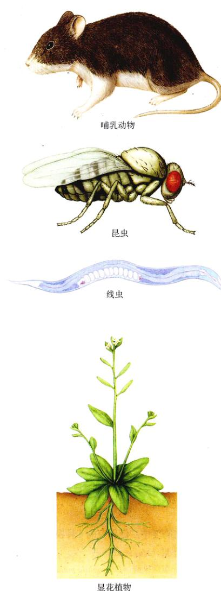图 17.2 4种发育系统 研究发育细胞生物学机制的学者将注意力集中在这4种生物。包括：哺乳动物（鼠）、昆虫（果蝇）、线虫、显花植物（拟南芥）。
几乎所有的多细胞有机体都要经过发育。此过程在动物尤其是哺乳动物、昆虫、线虫和显花植物中研究得比较深入。
脊椎动物的发育是一个动态的过程。细胞快速分裂和相互迁移直到形成最初的形态（图 17.3）。在不同的位置，特定的细胞形成机体器官，接着机体长到一定的大小和形态以确保它在出生后可以存活下来（见第60章）。整个过程通常分为4个阶段。正如有丝分裂，虽然可以人为地划分不同的阶段和界限，可事实上整个过程是逐渐演变的。
图 17.3 发育的奇迹 9周大的人类胎儿由一个单细胞受精卵开始的。受精卵的子细胞反复分裂和特化，形成了可以辨认的胎儿容貌。
脊椎动物由一个受精卵开始发育。在受精一小时后，受精卵开始迅速地分裂为越来越多的逐渐减小的细胞，直到形成一个实心的细胞球，这个细胞球就叫做卵裂球 (blastomere)（图 17.4）。细胞分裂的起始阶段称为卵裂 (cleavage)，在此期间整个胚胎的体积并不增大，相反，受精卵内的物质被分割到子细胞中。受精卵的两端一般称为动物极 (animal pole) 和 植物极 (vegetal pole)。一般来说，动物极的卵裂球将会形成机体的外部组织，植物极的则形成内部组织。胚胎的背腹取向是由精核 (sperm nucleus) 进入卵的位置决定的，这一点对应于将来的腹部。经过12次分裂，受精卵的迅速分裂减缓了，胚胎细胞内开始了重要基因的转录。
卵裂球的最外层细胞（图 17.5a）彼此紧密连接在一起，就好像第7章所讲的，细胞通过包围在外面的蛋白丝和周围的细胞连接在一起。这些紧密的连接形成了一个密封的系统，将内部的细胞群和外部的环境隔离开。
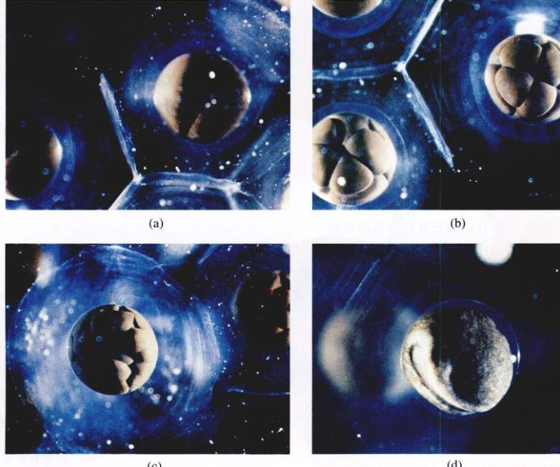图 17.4 卵裂形成蛙的胚胎 (a) 最初的分裂发生在胚胎面对你的一面，(b) 胚胎的这一面形成了一簇细胞，很快扩展成 (c) 一团紧密排列的细胞，(d) 这团细胞最后内陷入胚胎的内部，依次形成原肠胚和神经胚。
图 17.5 脊椎动物的发育路径 家鼠发育过程中主要事件的图解。(a) 卵裂; (b) 囊胚的形成; (c) 原肠胚形成; (d) 神经胚形成; (e) 细胞迁移; (f) 器官形成; (g) 生长。
在大约16个细胞的阶段，内部的细胞开始将 Na⁺ 从细胞质泵到细胞之间的空间，因此形成的渗透梯度导致水也进入到细胞球的中间，扩大了胞内的空间。最后形成的中空细胞球称为囊胚，在哺乳动物中也叫做微泡 (blastocyst)（图 17.5b）。
卵裂球的一些细胞随后内陷形成原肠胚 (gastrula)。细胞通过伸展形成片状伪足 (lamellipodia) 的形式而经过相邻的细胞，从而引起相邻细胞也产生片状伪足。很快这一层细胞自身收缩并且向内挤压，这样内陷就开始了。这一过程称为原肠胚形成 (gastrulation)（图 17.5c），此过程中产生了脊椎动物的主要体轴，把卵裂球转化成一个有中央消化通道的两侧对称的胚胎。从此开始，胚胎就有了3个胚层，它们的组织形式就预示着将来成熟机体的组织形式。内陷形成原始消化道的细胞属于内胚层 (endoderm)，它们发育为胃、肺、肝和大多数的内部器官。保留在外部的细胞是外胚层 (ectoderm)，它们发育为机体外部的皮肤和神经系统。那些脱离了内陷细胞并且占据了内外胚层之间空间的细胞属于中胚层 (mesoderm)，它们最终形成脊索、骨骼、血管、结缔组织和肌肉。
在原肠胚完全形成后不久，胚胎背面的外胚层区域开始加厚，这是由于它们下面的脊索出现而触发的，通过细胞的伸长完成外胚层的变厚。这些细胞通过收缩细胞一端的肌动蛋白丝 (actin filament) 而形成楔形细胞，细胞形状的改变导致神经组织卷曲成管状，最后脱离其他的中胚层细胞，发育成大脑和脊髓。这个管称为神经管 (neural tube)，形成神经管的过程叫做神经胚形成 (neurulation)（图 17.5d）。
在脊椎动物发育的下一个阶段，许多的细胞沿着特定的途径从胚胎迁移到特定的位置形成远离神经管的组织（图 17.5e）。神经嵴 (neural crest) 细胞从神经管中脱离出来，形成很多的结构，包括机体的一些感觉器官；从肌肉组织的中央区迁移出来的细胞叫做体节 (somite)，形成机体的骨骼肌；还有一些细胞迁移形成血细胞和配子。当一个迁移细胞到达它的目的地时，它表面的受体蛋白与目的组织细胞表面的蛋白质反应，触发迁移细胞的细胞骨架发生变化，从而终止移动。
在细胞迁移和细胞集落 (colonization) 形成的后期，虽然胚胎只有几厘米长且只有大约 10⁴ 个细胞，但是脊椎动物的基本结构已经确定了。随后的组织发育成器官（图 17.5f），胚胎增大 100 倍，细胞数目增加 100 多万倍（17.5g）。
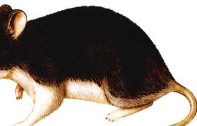(g) 生长
与其他动物一样，昆虫的发育也要经过一系列协调的细胞变化，但是发育途径与脊椎动物有很大的不同。许多昆虫在发育过程中有两种不同的形态：第一种是管状的摄食机器，称为幼虫 (larva)；第二种是会飞行的，有足和翅。从一种形态变化为另一种形态的过程称之为变态 (metamorphosis)，是发育过程中很关键的一个变化。下面描述果蝇的发育过程（图 17.6）。
果蝇的发育始于受精之前，即在卵细胞的形成时期。特化的滋养细胞将它们自身的 mRNA 移入离它们最近的卵子端部（图 17.7a）。由于母体基因合成的 mRNA 位于卵细胞特定位置，因此受精卵经过反复的细胞分裂，不同的子细胞将含有不同的 mRNA 分子。所以说，母体的（而不是受精卵的）基因决定着发育的开始。
图 17.6 果蝇 果蝇是发育过程研究最全的动物之一，这是其背面观。
在受精之后，经过没有胞质分裂的 12 轮核分裂后，大约 6000 个核全部都在一个细胞质中。这个多核体胚层 (syncytial blastoderm)（图 17.7b）中的所有核都可以自由地和别的核接触，但是位于卵不同区域的核接触到不同的母体产物。然后核沿着胚层表面均匀地分布，细胞膜在它们之间生成。接着将会发生胚胎的折叠和原始组织的发育，这一过程与脊椎动物的发育基本相同。在受精后的一天内就发育成管状躯体，即幼虫。
幼虫很快就开始摄食，并且逐渐长大。由于主要由壳多糖构成的外骨骼不能很好地伸展，因此它在一天内蜕去了外骨骼。在新的外骨骼变得坚硬之前，幼虫可以加大它的体积。3次蜕皮总共只需要4天时间（图 17.7c）。
在胚胎生长期间，许多被称为成虫盘 (imaginal disc) 的细胞群保留作特殊用途（图 17.7d），成虫盘在幼虫期没有任何的作用，但却与成虫一些重要器官的形成有密切的关系。
在最后一次蜕皮之后，幼虫形成一个坚硬的外壳，这时幼虫转变为蛹 (pupa)（图 17.7e）。幼虫细胞分解并释放出营养物质，用来滋养不同成虫盘的生长和发育（如眼盘、翅盘、腿盘等）。然后，这些成虫盘相互结合在一起，组装成成熟的果蝇（图 17.7f）。果蝇由幼虫到蛹，再到成熟的果蝇需要大约4天，随后蛹壳破裂，果蝇从中脱出。
在发育途径的最基本水平上，植物和动物有许多相同的重要元素。但是，它们机体所采用的机制却大不相同，动物细胞在发育过程中有一系列的迁移运动，而植物细胞被锁在固定的细胞壁中，不能移动，植物体中的每一个细胞都固定在生成它的位置上。植物的发育是通过向外生长来实现的，利用分生组织 (meristems) 生成新的部分。由于分生组织不断地分裂，产生大量的细胞并分化成植物的不同的组织。
图 17.7 昆虫发育的路径 果蝇发育过程中几个重要事件的图解说明。(a) 卵; (b) 多核体胚层; (c) 幼虫蜕皮; (d) 成虫盘; (e) 变态; (f) 成虫。
图 17.8 植物发育的路径 拟南芥发育阶段的图解说明。(a) 早期细胞分裂; (b) 组织形成; (c) 种子形成; (d) 萌发; (e) 分生组织的发育和形态建成。
植物和动物的另一个区别就是大多数的动物是可以运动的，可以远离那些不适应的环境。植物扎根于一个地方，只能单纯地忍受那里的环境。植物利用宽松的发育规则来补偿这一限制以适应当地的环境。植物由一些不同类型的部件组成，例如树叶、根、枝条和花，但每一部件并不局限于固定的尺寸和位置。每一部件都有严格的结构和功能，如何组装这些组件则很灵活。随着植物的发育，它仅仅是简单地增加更多的组件，并且环境对它们的种类、数量、大小尺寸和位置产生重要的影响。植物就可以通过这样的方式来调整发育路径去适应当地的环境。
显花植物受精卵的第一次分裂是偏离中心的，因此其中一个子细胞较小，有密集的细胞质。这个细胞开始反复分裂，生成一个细胞球且最终形成胚 (图 17.8a)。另一个子细胞也连续分裂形成伸长的结构，称之为胚柄 (suspensor)，它将胚和种子的营养组织连接在一起，胚柄为胚发育所需的营养物质提供了通道。正如动物胚胎在卵裂期形成最初的体轴一样，植物胚生成了根茎轴。在胚柄附近的细胞将会形成根，而在轴的另一段则会发育成茎。
类似于动物胚胎的3个胚层，虽然植物没有细胞迁移，但是在植物胚还只是一个细胞球时，3种基本的组织就开始分化了（图 17.8b）。最外层的细胞将会变成表皮细胞 (epidermal cell)，胚的内部形成基本组织 (ground tissue) 细胞，其最终的功能是贮存营养和水分；而胚的核心则会形成维管组织。
3种基本组织形成以后，显花植物的胚将形成一片或是两片子叶 (cotyledon)。此时，植物的发育停止，此时的胚或被营养组织包围，或将营养物质贮存到子叶中（图 17.8c），这样就形成了种子。种子可以抵制干旱和恶劣的环境，在休眠状态，它作为一个载体可以将胚散布到遥远的地方，还可以使胚在一个成熟植物无法生存的环境中存活。
由于水分、温度或别的因素引起的外界环境变化将导致种子萌发。种子中的胚将继续发育，迅速生长，它的根向下伸展，而茎叶则向上生长（图 17.8d）。
构成植物体的部件在组装过程中表现出了植物发育的灵活性。在根和茎的顶端分生组织产生大量的细胞以形成叶、花和成熟植物的其他组分（图 17.8e）。与此同时，根和茎中的分生组织生成木质及其其他功能够使其周长增加的组织。植物组织形成许多激素来影响分生组织的活性和植物体的发育。植物激素（见第41章）是调节植物体发育和适应环境的工具。
植物体的形态建成 (morphogenesis) 很大程度上是由细胞膨胀的可控变化来决定的。细胞通过渗透性扩张而改变自身的形态（图 17.8e）。调节植物生长的激素和其他因素影响到质膜内以微管束的取向。在新细胞壁的形成过程中，微管束似乎能指导纤维素环绕新的细胞而沉积。纤维素纤维的取向反过来又将决定细胞在增加体积的同时如何伸长，这样将最终决定细胞的形态。
尽管在先前讨论的3种机制中存在着许多的不同，但是人们越来越清楚地认识到，多数的多细胞组织发育有着非常相似的细胞机制。这说明了这些机制是在多细胞生命的早期开始进化的。这里我们将重点研究在不同组织发育过程中有着特殊重要性的6个机制。
在动物发育的许多阶段，细胞会发生迁移现象，有时要经过很长的距离才能达到它们最终的发育位置。到脊椎动物发育完成完毕时，许多组织的细胞是来自早期胚胎截然不同的部位。细胞迁移采用的一种方法是利用细胞黏附分子 (adhesion molecule) 拖动自身，例如钙黏素蛋白 (cadherin protein)（见第7章）。钙黏素贯穿质膜，一端突出到细胞质，另一端伸展至细胞表面。钙黏素的胞浆部分附着于肌动蛋白或细胞骨架的中等纤维，而胞外部则是由于5个长100个氨基酸的片段首尾相连而成。其中3个或是更多的片段有钙离子的结合点，这些位点在钙黏素与其他细胞黏连的过程中起到了很重要的作用。
现在已经发现了很多种类的钙黏素，每种钙黏素只能与同种钙黏素的末端片段相连，在相邻细胞的细胞骨架间形成钙黏素的连接。当一个细胞移动向不同的组织时，它所表达的黏素属性将会改变。当两种表达不同钙黏素的细胞混合在一起时，它们会按类别将自己挑选出来，聚集成为两个隔离的群体。这就是为什么发育中果蝇的成虫盘组成成虫的原因。其他不依赖钙的细胞黏附分子将会加强钙黏素之间的连接，例如由迁移神经细胞所表达的神经细胞黏附分子，但是在保持细胞聚集的过程中，钙黏素起主要的作用。
在一些组织中，例如结缔组织，组织的大部分空间是由细胞之间的间隙占据。这些间隙不是真空的，而是充满了分子网状物，这些分子是由周围的细胞分泌，主要是长的多糖链共价结合到蛋白质上（多糖蛋白）形成的基质，纤维状蛋白（胶原、弹性蛋白和纤连蛋白）链镶嵌在其中。迁移细胞通过细胞表面的整合素 (integrin)（曾在第7章描述过）和基质结合而穿梭基质。整合素和肌动蛋白丝相连接，在细胞表面对处延伸，好像是两只手。这双手紧紧抓抓住基质的特定部分，例如胶原蛋白 (collagen) 或是纤连蛋白 (fibronectin)，这样就把细胞骨架连接到基质的细丝上。通过这样的结合，不仅可以提供了一个锚，还可以引发细胞的变化，改变细胞骨架的生长，改变细胞向基质分泌物质的方式。
因此，细胞迁移很大程度上就是改变细胞连接的模式。随着细胞的迁移，它不断地伸出突出物探测周围环境的性质。细胞就是这样通过不同试探性接触，逐渐移动，从而探测出向自己最终目的地的方向。
果蝇卵经过卵裂产生的细胞内有不同的发育信号，引导不同细胞走向不同的发育路径，这种发育模式叫做镶嵌型发育 (mosaic development)。相反，哺乳动物的卵裂球有一套完全相同的决定子，它们通过细胞间的反应决定机体的形态，这种模式称之为调整型发育 (regulation development)。
可以通过将早期囊胚的细胞分离并且独立的发育来证明细胞间反应的重要性。在这样的条件下，动物极卵裂球发育具有外胚层的特点，而植物极的发育则具有内胚层的特点，但是没有任何细胞的发育具有中胚层的特征。如果让动物极和植物极细胞彼此接近，一些动物极细胞则会发育成为中胚层。两种细胞之间的反应导致了细胞发育路径的转换。当一个细胞由于邻近细胞的作用而由一种发育路径转换为另一种时，诱导就发生了（图 17.9）。
细胞是如何诱导临近的细胞发育发生变化的呢？显而易见，诱导细胞分泌蛋白质作为胞内信号。正如第7章讨论的，信号分子可以使基因转录的模式产生迅速的变化。
在一些情况下，被称为组织者 (organizer) 的特殊细胞群产生扩散性的信号分子，而这些信号分子可以把位置信息传递给其他的细胞。组织者对周围组织的发育产生深远的影响，它们告知周围组织离组织者的距离，越接近组织者，信号分子或形态发生素 (morphogen) 的浓度越高（图 17.10）。虽然只分离出来几种形态发生素，但是它们却反映了有关发育过程中决定相应位置普遍机制的一部分内容。
图 17.9 脊椎动物经诱导形成眼睛的发育过程 眼睛由叫做视柄的前脑延伸发育而来，视柄直到接触到外胚层的时候才停止生长，该接触诱导了与之相接触的外胚层发育为晶状体。
图 17.10 组织者产生一个形态发生素的梯度 随着形态发生素的扩散，它的浓度逐渐降低。不同浓度的形态发生素刺激不同器官的发育。
一种形态发生素可以产生不同的作用，这依赖于受作用的细胞距离组织者的远近。以非洲爪蟾 (Xenopus) 为例，低浓度的活化素 (activin) 将导致早期胚胎的动物极细胞发育形成表皮，浓度略微大一些，将诱导细胞发育成肌肉，再随着浓度的增加将导致细胞发育成脊索（图 17.11）。
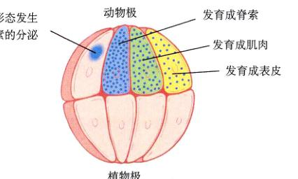图 17.11 爪蟾早期胚胎细胞的命运 每个细胞的命运由形态发生素的浓度决定。
哺乳动物的卵细胞在形态和实质上都是对称的，所以在 8 细胞卵裂球之前的细胞都是相同的。这样的细胞被称为全能性的 (totipotent)，意思是它们可以转录基因组中所有的基因。如果它们被彼此分离开，它们当中任何一个细胞都可以发育成为一个完整的正常个体。事实上，这种方法已经用于具有特殊价值家畜的商业性繁殖，一次可以得到4个或是8个相同的后代。相反的过程仍然起作用，如果把两个不同的 8 细胞胚胎中的细胞结合在一起，仍然可以得到一个正常的个体，它被称为异源嵌合体 (chimera)，因为它包含有两个不同遗传谱系的细胞（图 17.12）。
由于细胞间的相互作用，在 8 细胞期后，哺乳动物的细胞开始变得不一样了。此时，影响细胞将来发育结果的路径就已经决定 (determination) 就是把一个特定的细胞定型到特定的发育路径。两栖动物胚胎的前脑区细胞在原肠胚早期还没有决定，如果把它移植到胚胎的其他位置，它将发育得像附近的细胞，但是，在原肠胚的晚期，决定开始起作用了，前脑区的细胞不管被移植到什么位置都将会发育成神经组织。
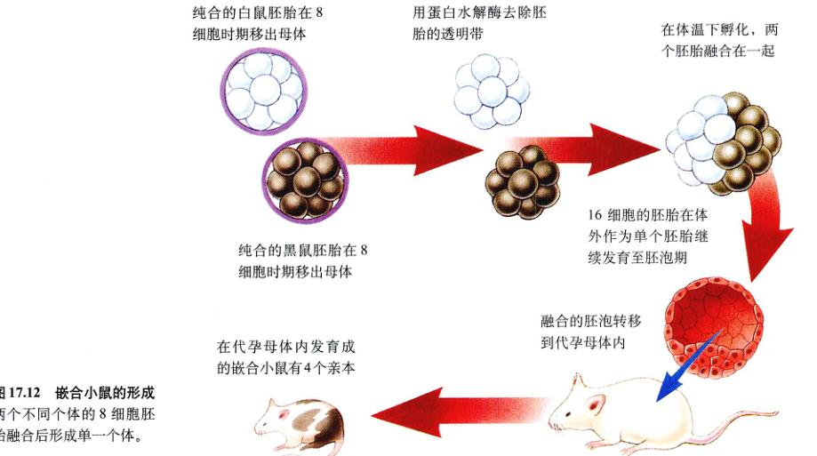图 17.12 嵌合小鼠的形成 两个不同个体的 8 细胞胚胎融合后形成单一个个体。
决定与分化是不同的，分化是指在发育末期细胞的特性。细胞可能在它们分化成组织之前就已经决定发育成该组织。例如，果蝇的眼盘细胞完全被决定发育成眼睛，但是他们在幼虫阶段的大部分时间保持未分化状态。
决定的分子机制是什么？在第16章章详细讨论过，细胞利用调节蛋白基因启动发育的变化。当编码这些蛋白质的基因被激活时，其中的一个效果就是加大它们自身的活性，这样就确定了发育的转换。启始了一连串沿着特定发育路径进行下去的事件。当一组调节基因被激活时，细胞并不开始分化，而是在其他的因素和调节蛋白反应促使它激活别的基因时才能分化。因此，一旦最初的基因被激活了，细胞就会沿着确定的路径发展。
很多情况下，在一个细胞完全确定发育路径前，它首先只是部分地被确定，有一个可以反映它在胚胎位置的位置标签，这些标签可以对机体随后的发育形态产生巨大的影响。在一个鸡胚胎中，如果位于腿芽（正常情况下将会发育成腿）底部的组织移植到看似相同的翅芽（正常情况将会发育成翅）的顶部，这个组织将会发育成脚趾而不是腿。虽然这个组织组已经被决定发育成腿，但是它却没有沿着确定的路径发育，因此它可以被翅芽顶端的位置信号影响而形成一个顶端（这里是腿的顶端）。
直到最近，生物学家才认为决定是可以逆转的。在20世纪五六十年代，John Gurdon 和他人一起完成了一个看似很有说服力的实验：利用非常细的移液管把青蛙或是蟾蜍卵细胞的细胞核吸走，然后研究人员用另一个体细胞的细胞核取代卵细胞的细胞核。如果细胞核是取自晚期的胚胎，卵细胞将发育成蝌蚪，但是它们中的大多数在发育到成体之前就死亡了。
很多的研究人员尝试过细胞核移植实验，但是都没有成功，直到 1984 年，一个在德克萨斯工作的丹麦胚胎学家 Steen Willadsen 成功地利用羊胚胎细胞核克隆出一只羊。成功的关键是在胚胎发育的非常早期挑出细胞核。这个令人兴奋的结果很快被别人在其他一些生物中复制出来，包括猪和牛。
只有早期的胚胎细胞才能起作用。研究人员在经过多次晚期细胞核的移植尝试之后确信：在动物胚胎经过最初的几次分裂之后，它们是不可逆转的。
我们现在知道这个结论是没有根据的。解开这个谜团的关键性工作是由遗传学家 Keith Campbell 和 Ian Wilmut 在苏格兰完成的，他们推断可能卵细胞和供体细胞核需要在细胞周期的同一时期。他们从一个6岁羊的乳房上取出一些乳腺细胞，并根据一个乡村歌手的名字 Dolly Parton 为克隆羊取名为 Dolly，这些细胞经过组织培养而生长。然后，为了准备克隆，研究人员在5天内，大幅度地降低羊乳腺细胞生存环境的血清 (serum) 营养浓度。由于缺乏营养，细胞暂停于周期的起始阶段。在平行的准备中，将从母羊身上得到的卵细胞去核（图 17.13）。
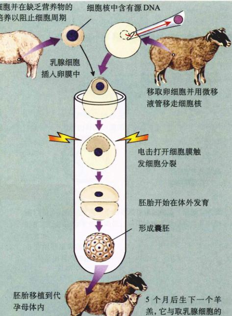图 17.13 发育过程是可逆的 Campbell 和 Wilmut 的实验首次成功地克隆了成体动物。
1996年1月，将乳腺细胞像外科手术一样插到卵子周围的包被内，然后研究人员进行了一次短暂的电击，这样将导致两个细胞的质膜出现裂隙使得乳腺细胞核进入到卵细胞中。同时电击还可以触发细胞周期的开始，导致细胞开始分裂。
6天之后，在277个分裂的胚胎中有30个发育到空心球形的囊胚阶段，其中的29个被移植到代孕母羊体内。5个月后，在1996年7月5日，一只羊产下一只羊羔，它就是 Dolly，第一个由完全分化的动物细胞产生的克隆羊。Dolly 的诞生证明决定是可以逆转的。只要有正确的技术，一个完全分化细胞的命运是可以改变的。
所有的动物看上去都是利用位置信息来决定身体各部分的基本形态，并由此确定成体的结构。位置信息是如何作为标识被编码的以及细胞是如何读取信息的的？为了回答这个问题，我们先来考察一下在果蝇形态建成中位置标识是如何被利用的？1995年的诺贝尔生理医学奖就授予了了解并开发这个谜团的科学家。
正如先前讲过的，由于母体 mRNA 分子在滋养细胞的作用下沉积在卵细胞的一端，所以果蝇的卵细胞在受精之前就具有不对称性。一部分母体 mRNA 是由称做 bicoid 的基因编码的，它保留在其进入点附近，这将作为胚胎前端的标记。受精作用引发这个 mRNA 翻译成 bicoid 蛋白质，并扩散到多核体囊胚层，形成形态发生素的梯 度。不能合成 bicoid 蛋白质的母体将产生没有头和胸部的胚胎（实际上这些胚胎是双尾的，因此称为 bicoid），bicoid 蛋白质确定了胚胎前端。
形成胚胎的极性：卵的受精触发母体 mRNA 合成 bicoid 蛋白。它在卵中扩散形成梯度，并决定了胚胎的极性，在高浓度区域形成头部。
进入分节运动阶段：受精后半个小时，bicoid 蛋白开启了一系列间隙基因的简单信号。间隙蛋白把胚胎分成几个区域。抗体中与间隙蛋白结合的荧光染料 Krüppel (红) 和 hunchback (绿) 结合使得这些区域清晰可见；而交叠的区域显黄色。
功能区域的形成：大约半小时后，间隙基因开启了被称为 hairy 的配对基因。它在每个区域中形成边界，将胚胎分成7个功能区域。
图 17.14 早期果蝇胚胎的机体形成 从诺贝尔奖获得者 Christiane Nusslein Volhard 和 Sean Carroll 于 1995 年拍摄的照片中，可以看到果蝇的早期发育，在此过程中形成了胚胎的基本体节形态。
图 17.15 控制果蝇器官形成的基因 tinman 基因负责肠肌系统和心脏的形成。它的染色显示了果蝇胚胎中 tinman 基因 5h (a) 和 17h (b) 的表达。肠肌系统出现在正常胚胎的边缘 (c)，如果基因突变，则不会出现 (d)。心脏组织沿着正常胚胎的中部发育 (e)，但在突变的胚胎中没有心脏组织 (f)。
如果把 bicoid 蛋白注射到那些由于变异而不能合成它的胚胎前端，胚胎将正常发育；如果注射到正常胚胎的后端，那一端将发育成头和胸部。
bicoid 蛋白通过激活那些编码受精后首先先转录的 mRNA 的基因，而对胚胎的组织产生深远的影响。在多核体囊胚层分裂成多个细胞前的两个小时，6个间隙基因 (gap gene) 开始转录，这些基因指导胚胎粗略地再分 (图 17.14)。其中的一个基因叫做驼背基因 (hunchback)，因为该基因的胚胎没有胸节而呈驼背状）。虽然 hunchback mRNA 分布在整个胚胎中，但是它的翻译受到另一个称为 nanos 的母体 mRNA 蛋白产物控制（nanos 一词来源于希腊语“矮小”，因为该基因的缺失突变体没有腹节，因此很小）。nanos 蛋白结合到 hunchback mRNA 上，抑制它的翻译。只有在远处的胚胎前端才不会有太多的 nanos 蛋白抑制 hunchback mRNA 的翻译，因此 hunchback 蛋白主要在胚胎的前端合成。随着它扩散到胚胎后端，就建立了个形态发生素的梯度，这个梯度是腹部和腹部形成的原因。
其他的间隙基因在胚胎较靠后的区域作用。它们一次激活11个或是更多 pair-rule 基因。（突变时，每个 pair-rule 基因改变相隔体节）其中的一个 pair-rule 基因叫做 hairy，产生具有7条带的蛋白质，通过荧光标记观察时好像斑纹，这些带子作为将胚胎划分为7个区域的边界。最后，一组16个或是更多的体节极性基因 (segment polarity genes) 再分这些区域。例如，engrailed 基因将 hairy 产生的这7个区域的每一节分别划分为前端和后端。这14个区域就对应着胚胎的3个头节、3个胸节和8个腹节。
因此，在受精后的 3h 内，分子基因活性的级联效应高度协调，并产生了果蝇胚胎盘状体的体制。这些基因以及其他发育上重要基因的激活依赖于多核体囊胚层内可能存在的形态发生素的自由扩散（图 17.15）。在细胞分区的哺乳动物胚胎中，一定有其他机制发挥作用。
图 17.16 同源异型突变 bithorax 基因中3个不同的变异导致果蝇形成额外的一个带有对翅的胸节。与图 17.6 的正常果蝇相比较。
图 17.17 果蝇的同源异型基因 同源异型基因复合体或者 HOM 复合体，这些基因分为两簇：Antennapedia 复合体（前端）和 bithorax 复合体（后端）。
在果蝇形态建成中成功地确定体节的数目后，一系列的同源异型基因作为主要开关决定这些体节所采用的形式。同源异型基因编码作为转录因子的蛋白质，每一个同源异型基因激活遗传程序中的特定组件，触发14个区块中特定机体组分的形成。
同源异型基因突变导致完全正常的机体组分出现在异常的位置。例如，bithorax 上的突变将导致果蝇多长出一对翅，就好像有两个胸节（图 17.16）。Antennapedia 上的突变将导致腿长在触角的位置。在20世纪50年代早期，遗传学家 Edward Lewis 发现了一些包括 bithorax 在内的同源异型基因都位于果蝇的第三个染色体上，形成一个紧密的基因簇叫做 bithorax 复合体，这些基因的突变全部影响胸节的后半部分和整个腹部的发育。Antennapedia 复合体，是在 1980 年由 Thomas Kaufmann 发现的。它控制着果蝇的前端，这两组基因控制体节的顺序一致（图 17.17）。
果蝇典型的同源异型基因都含有同源异型框 (homeobox)，它由 180 个核苷酸序列构成，编码一个长为 60 个氨基酸的 DNA 结合结构域，叫做同源异型域（图 17.18）。含有同源异型框的蛋白质，作为转录因子，确保和发育相关的基因在适当时间转录。比如分节基因 bicoid 和 engrailed 同样包含有同源异型框序列。显然，同源异型框的功能是辨别基因组中那些在形态建成中发挥作用的部分。
自从同源异型基因在果蝇体内首次被发现以来，在老鼠和人体内也分别发现了同源异型基因，后者是经过6亿年从昆虫进化而来的。在哺乳动物和昆虫中存在同源异型基因，表明控制机体组分位置的同源异型基因起源于动物进化的早期。类似的基因也可能出现在显花植物中。利用果蝇同源异型基因序列制成的探针已经用于识别其他生物体内的相似序列，包括青蛙、老鼠、人、奶牛、鸡、甲虫，甚至是蚯蚓。老鼠和人类有4个同源异型基因簇，在老鼠体内被称为 Hox 基因。和果蝇一样，哺乳动物的同源异型基因与它们控制的体节顺序具有相一致的排列顺序（图 17.19）。因此，同源异型基因的顺序特征在进化过程中是高度保守的（图 17.20）。在鼠的4个同源异型基因簇中一共有 38 个 Hox 基因，对于它们是如何相互作用的，我们只是刚刚开始了解。
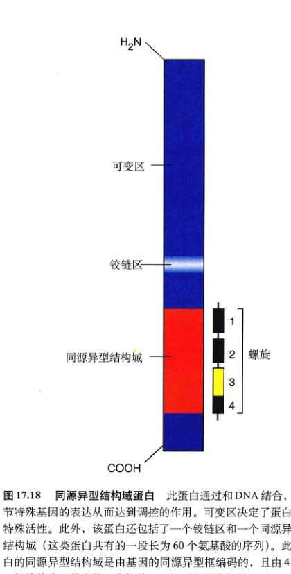图 17.18 同源异型结构域蛋白 此蛋白通过和 DNA 结合，调节特殊基因的表达从而达到调控的目的。可变区决定了蛋白的特殊活性。此外，该蛋白还包括了一个铰链区和一个同源异型结构域（这类蛋白共有的一段长为 60 个氨基酸的序列）。此蛋白的同源异型结构域是由基因的同源异型框编码的，且由 4 个 α 螺旋构成。其中的一个螺旋用于识别和结合靶基因的一段特定序列。
图 17.19 果蝇和鼠同源异型基因簇的比较 果蝇的 Hox 基因和鼠的 Hox 基因相似，控制着身体前部和背部的发育。果蝇中这些基因位于一条染色体上，哺乳动物则位于4个独立的染色体上。图中基因及其所表达的部位颜色相对应。
图 17.20 高度保守的同源异型系列 将含有同源异型框的鼠基因插入到果蝇中，产生变异果蝇。正常果蝇触角的位置长出一条腿。
并不是所有在发育期间产生的细胞都会存留下来，例如，手指和脚趾之间的细胞死亡了，如果不这样，你将长出蹼而不是指。脊椎动物的胚胎产生了大量的神经元，以确保有足够的神经元可以生成必要的突触联系，但是超过一半的神经元没有形成突触联系，而是遵循神经系统的发育进行有计划的死亡。与因为受伤而导致细胞的偶然死亡不同的是，这些细胞的死亡是有计划的，而且对一定的发展过程是确实需要的。由于受伤而死亡的细胞通常是膨胀、破裂，将体内的物质释放到细胞外液中，这种形式的细胞死亡叫做坏死 (necrosis)。相反，程序化死亡的细胞收缩起皱，这一过程叫做细胞凋亡 (apoptosis)（这一词来自希腊语，意思是秋天树叶飘零），它们的残留物被周围的细胞吞噬。
这种发育调节的细胞自杀发生在一个死亡程序被激活的时候，所有的动物细胞看上去都有这样的程序。例如，在线虫中，在一个可预知和可重复的细胞凋亡模式中，相同的 131 个细胞在发育过程中总是死亡。这个过程由 3 个基因控制。两个 (ced-3 和 ced-4) 组成死亡程序本身，如果其中的一个发生了突变，则那 131 个细胞就不会死亡了，而是继续形成神经组织和别的组织。第三个基因 (ced-9) 抑制由前两个基因编码的死亡程序（图 17.21a）。同样种类的细胞凋亡程序也出现在人体细胞...
内；bax 基因编码死亡程序，另一个被称为 bcl-2 的致癌基因则抑制它的作用（图 17.21b）。细胞程序性死亡机制在动物进化的过程中高度保守。由 bcl-2 生成的蛋白质和 ced-9 合成的蛋白质氨基酸序列有 25% 是相同的，如果把人的 bcl-2 基因的一个拷贝移入到缺乏 ced-9 基因的线虫体内，bcl-2 则抑制由 ced-3 和 ced-4 编码的死亡程序。
Bax 是如何杀死细胞的？bax 蛋白似乎是通过结合到细胞线粒体的渗透孔上并增加其渗透性，从而触发了细胞的凋亡。bcl-2 是如何阻止细胞死亡的？一种观点是：自由基可以严重地损坏细胞，而 bcl-2 则可以阻止自由基的破坏作用。能清除自由基的蛋白质或是其他分子被称为抗氧化剂 (antioxidant)。在抑制细胞程序性死亡方面，抗氧化剂和 bcl-2 有着同样有效的作用。
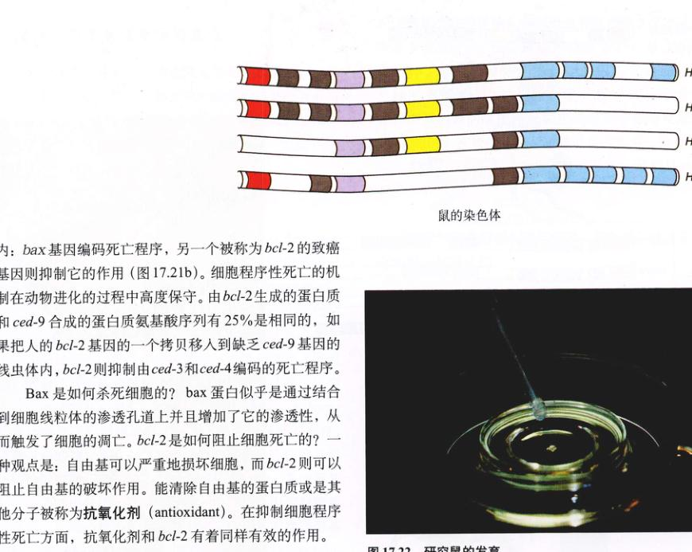图 17.22 研究鼠的发育

图 17.21 程序性细胞死亡 细胞凋亡对于所有动物的正常发育是必需的。(a) 在发育的线虫中，ced-3 和 ced-4 编码导致 131 个特殊细胞程序化死亡的蛋白。在别的细胞中，由于 ced-9 蛋白的产生，抑制了该程序。(b) 在人体，一些细胞由于 bax 蛋白而引发程序化死亡，在其他细胞则由 bcl-2 基因阻断程序化死亡。
在对发育的分子机制研究中，有些最出色的研究是以哺乳动物为对象的，特别是小鼠 (Mus musculus)。小鼠有一组和果蝇的同源异型基因——Hox 基因（图 17.22）。它们看上去和果蝇的同源异型基因十分相似。很有趣的是，它们不仅有相同的基因，而且还有相同的顺序。显而易见，在动物进化的过程中，同源异型基因高度保守。
小鼠可以生成含有来自两个不同遗传谱系细胞的异源嵌合体，正是因为具有这样的能力，小鼠发育模型系统才被赋予了巨大的力量。在由对称卵细胞发育成的脊椎动物中，哺乳动物的胚胎显得很不同寻常，它们没有化学梯度，卵裂的初期所有的子细胞完全相同。一直到 8 细胞阶段，如果分离出任何一个细胞都将形成一个正常的个体。此外，两个不同的 8 细胞期胚胎可以融合在一起形成单个胚胎，并继续发育成一个正常个体。这样的个体将会是异源嵌合体，含有两个胚胎的细胞。从严格意义上讲，每个异源嵌合体的小鼠都有 4 个亲本。
Hox 基因控制小鼠机体各部分发育。
图 17.23 研究果蝇的发育
微小的黑腹果蝇 (Drosophila melanogaster) 是近一个世纪以来遗传学家喜爱的研究对象，而且在它对我们深入了解发育的细胞机制发挥着重要作用。在过去的 10 年时间内，研究人员拼凑成一张完美的图画，它描述了果蝇发育早期的基因表达并决定果蝇成体的形态（图 17.23）。成虫机体的主要组分是由幼虫体内的成虫盘决定的；在蛹发育过程中，这些成虫盘生长发育并结合在一起形成成虫。
成体果蝇的身体分为 17 个体节，一些体节上具有翅和腿的附属物。在发育的早期，囊胚层的许多核还没有被彼此完全分开之前，体节就已经确定了。由母体物质在卵细胞内形成的化学梯度将会产生极性，从而指引胚胎的发育。一系列的分节基因通过化学梯度反应逐步地再分胚胎，先是分为 4 个体节，再就是 7 个、14 个，最后是 17 个体节。
在每一个体节中，重要机体组分的发育都会受到同源异型基因的控制。正如我们知道的，果蝇有两个同源异型基因簇，一个叫做 Antennapedia，用于调控机体的前端，另一个叫做 bithorax，用于控制机体的后端。每个基因簇中的基因排列和受它们控制的体顺序相一致。在鼠和人类中也分别有着类似的一组同源异型基因来控制机体的构造。
一系列体节基因将果蝇分为几部分；Antennapedia 基因控制前端的发育；bithorax 基因控制后端的发育。
果蝇的胚胎
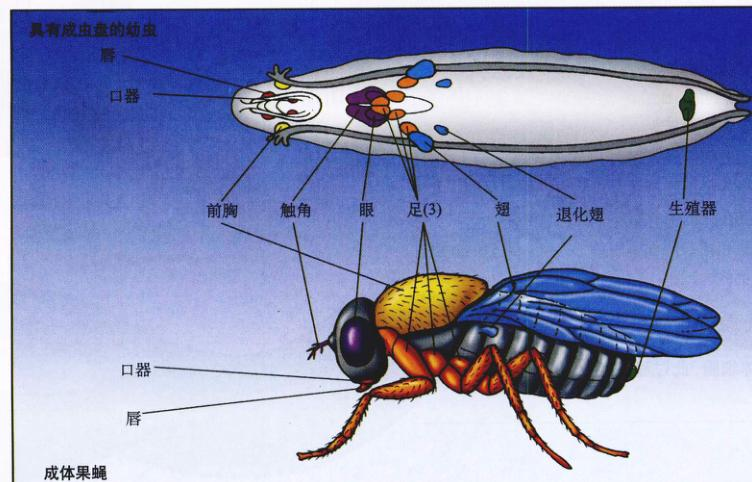成体果蝇
华美广杆线虫 (Caenorhabditis elegans) 是研究动物发育的一种重要模型。线虫大约只有 1mm 长，由 959 个体细胞组成，有着和果蝇差不多数量的 DNA。它的整个基因组已经完成测定，人们正在做出极大努力去完成其基因组全部 DNA 的序列测定。
由于华美广杆线虫是透明的，所以我们可以跟踪单个细胞的分裂过程。通过观察，研究人员知道了组成成虫的每一个细胞是如何从受精卵演变过来的。如图 17.24 所示，卵细胞一分为二，接着两个子细胞继续分裂。图中的水平线代表一次分裂，而垂直线代表一次分裂所需的时间，每个垂直线的末端代表一个完全分化了的细胞，线虫器官上的颜色与谱系图上的细胞群相对应。
一些已经分化的细胞，如生成线虫外表皮的细胞是经过 8 次分裂得到的，而有些表皮细胞则需要 14 次分裂。组成线虫咽部和其他摄食器官的细胞需要 9 到 11 次分裂，而生殖腺的细胞则要经过高达 17 次的分裂。
有 302 个神经细胞将发育线虫的神经系统，其中的 132 个细胞在它们生成后几分钟内将程序化死亡。除了变成卵细胞和精子的细胞以外，每一个细胞的命运在任何一个线虫体内都是一样的。
线虫经过一系列有序的细胞分裂从一个受精卵发育成 959 个体细胞，此过程已经被研究者精细的绘制完成了。
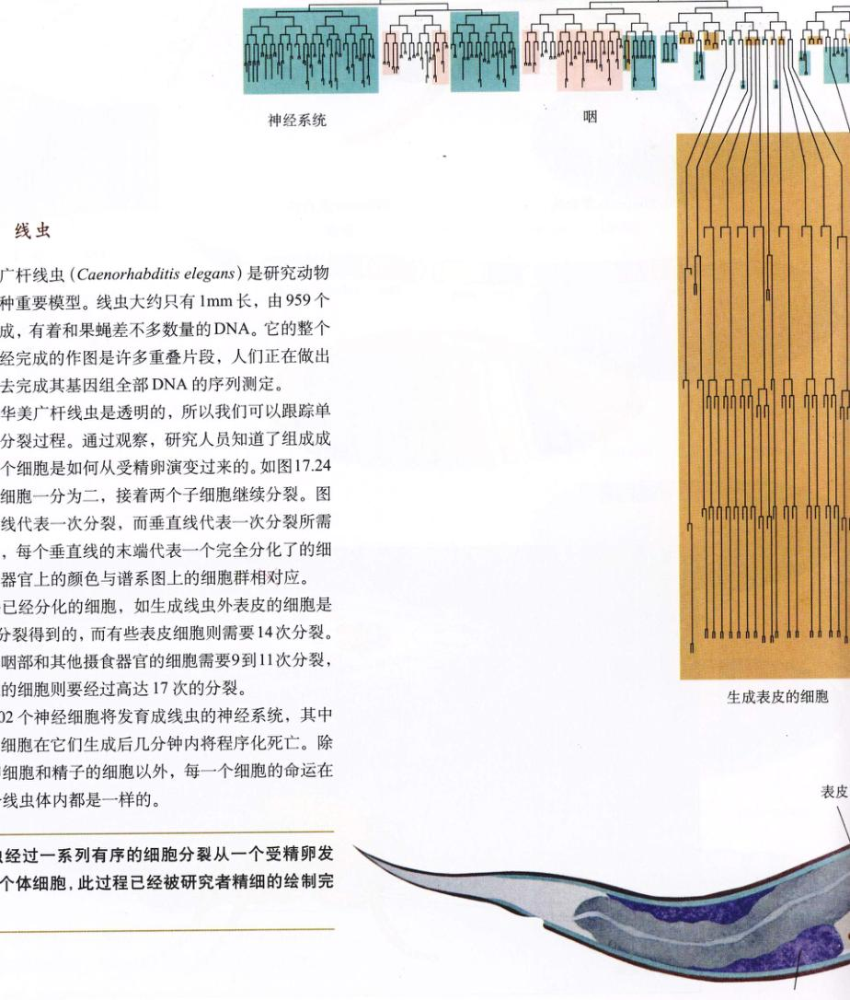图 17.24 研究线虫的发育
科学家近期通过大量研究一种十字花科芥属近缘的杂草拟南芥 (Arabidopsis thaliana)，开始了对植物发育的分子生物学探索。拟南芥很容易生长、杂交且具有短暂的世代期，因此它是研究植物发育的理想模型。同孟德尔研究的豌豆一样，拟南芥可以自花受精，为遗传分析提供了便利。它可以在试管内生长，一株植物在两个月后就可以得到上千株代子；它的基因组和线虫、果蝇的基因组大小相当。详尽的拟南芥基因克隆库为研究人员了解其全部基因序列提供了有用的工具。
目前研究拟南芥发育的工作大多数集中在获得并研究可以改变植物发育的突变。现在已经确认了许多种类的突变，其中的一些可以改变胚的基本构造和组织形态。现在已经知道了可以改变拟南芥胚胎形态的 50 多种不同基因突变，它们可以在植物发育的每一个时期发生作用。但是，这个领域的工作只是初步的，拟南芥早期形态建成的机制与我们已知的动物发育机制非常相似。
十分重要的是，拟南芥随后的器官发育和动物的器官发育是类似的。拟南芥，果蝇和鼠具有一组相似的调节基因来控制发育。例如，拟南芥的花是由 4 个轮生的变态叶按特定顺序排列而成。如同对果蝇体节的影响一样，同源异型突变能将花的轮生体从一种形态转变为另一种形态（图 17.25）。
科学家对植物发育的分子生物学机制研究才刚刚开始。概括地讲，它和动物的发育相似。例如，在动物和植物中，决定形态建成和器官发育的基因以相同方式发挥作用。
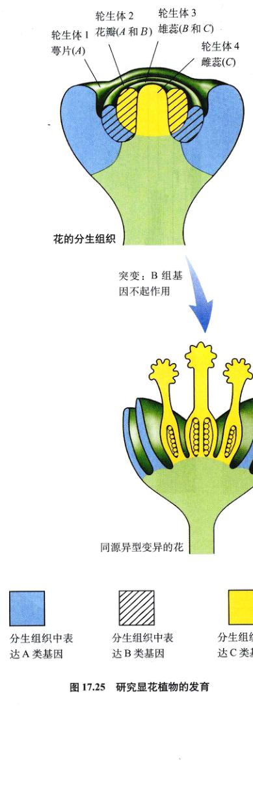图 17.25 研究显花植物的发育
所有的人都会死亡。有记录的最长寿的人是法国阿尔的 Jeanne Louise Calment，1997年她去世时年龄为 122 岁。人最“安全”的年龄是在青春期，如图 17.26 所示，10岁到15岁的人死亡率最低，青春期过后死亡率迅速增加。随着年龄的增加，死亡率呈指数性增加。当我们用对数坐标绘图时，死亡率从 15 岁到 90 岁沿着直线增加，每过8年增加1倍。当我们 100 岁时，死亡的危险率高达每年 50%。
有很多的理论解释为什么人类和其他的动物会衰老。虽然没有一个理论可以得到广泛的认可，但是下面的4个理论是经过深入研究的。
最早有关衰老的理论认为：随着年龄的增加，细胞不断地积累突变，最终将导致致命地损伤。通过认真的研究证明体细胞突变的确随着年龄的增加而增加。例如，随着细胞老化，往往会积累被修饰的碱基——8-羟基鸟嘌呤 (hydroxyguanine)，它是由于碱基鸟嘌呤上加入了羟基基团。但是在现在没有直接的证据证明这些突变导致了衰老。在广岛和长崎的幸存者中，虽然增加了突变负荷，但却没有出现衰老的加速，人们不禁对衰老和突变的关系产生了疑问。
在 1961 年进行的一次实验中，Leonard Hayflick 证明了组织培养生长的成纤维细胞分裂的次数是一定的（图 17.27）。经过 50 次分裂后，细胞就停止了分裂，细胞周期在 DNA 复制之前就被阻断了。如果一个细胞经过 20 次的分裂后冷冻，当它融化之后继续分裂 30 次，然后才停止分裂。
1986 年 Howard Cooke 解释了“Hayflick”界限，他发现了染色体末端有一段附加的 DNA。这些端粒区 (telomeric region) 有重复的 TTAGGG 序列，并且发现在较老的体组织中端粒区很短。Cooke 推测染色体每一次复制都将导致端粒帽丢失 100 个碱基对，最后经过 50 次复制，原来起保护作用的端粒帽将被耗尽，细胞就开始衰老，不再具有繁殖能力了。癌细胞似乎可以避免这样的缩短。
1998年的研究报道确认了 Cooke 的假说，提供了直接的证据证实端粒缩短和细胞衰老的关系。通过遗传工程，研究人员将一个基因导入原代培养的细胞中，这个基因将导致端粒酶的表达，从而形成 TTAGGG 的端粒帽。这样的结果是很明确的，新的端粒帽加载在细胞的染色体上，有人工加长端粒的细胞在 Hayflick 限度中将不会衰老，还会正常地再经过 20 个额外的世代。
许多关于衰老的理论将注意力集中在一个共同的观点：随着时间的推移，细胞不断地耗损，不断地积累损伤直到不能发挥作用为止，姑且称之为耗损假说“wear-and-tear”。这个观点暗示着衰老过程没有内在的有计划的限制，只是一个统计的问题——随着时间的延长，损伤、损耗和损坏，最终使细胞失去了行使正常功能的能力。
有相当多的证据证实衰老细胞的确可以积累损伤。其中最有意思的证据是关于自由基，即含有未配对电子的分子或是原子。自由基的化学性质很活跃，在细胞内具有很大的破坏力。自由基是氧化代谢的天然副产品，但是多数被一种特殊的酶所清除，以确保细胞内部不再受到破坏。
自由基起破坏作用的一个反应是在细胞内将葡萄糖连接到蛋白质上。这是一个不涉及酶作用的过程，称之为糖化作用。两种经常被糖化的蛋白质是胶原蛋白和弹
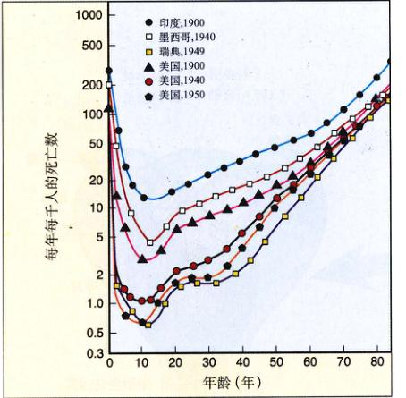图 17.26 Gompertz 曲线 在青春期之前，人的死亡率可能相差 25 倍，但是随后几十年的曲线斜率大体相当。
性蛋白，它们是关节结缔组织的重要成分。糖化的胶原蛋白和弹性蛋白不会被取代，这些分子可能与个体的年龄相同。
细胞内胶原蛋白和弹性蛋白的糖化以及其他蛋白的聚集将生成一种由葡萄糖连接的蛋白质构成的复杂混合物，叫做高度糖化终产物 (AGEs)。AGEs 可以彼此交联，降低关节处结缔组织的灵活性，并产生许多衰老的其他特征。
毋庸置疑的是，在衰老过程中至少有一些方面是在基因的直接控制之下的。正好像基因调节机体的发育一样，基因似乎在调节衰老的进度。这些基因的突变可以导致早地衰老。在很少见的隐性 Hutchinson-Gilford 综合征中，生长、性成熟和骨骼发育都比较迟缓，动脉粥样硬化 (atherosclerosis) 和中风经常导致病人在 12 岁的时候死亡，据记载，这样的病例仅仅有 20 个。
类似的 Werner 综合征并不罕见，全世界范围内，每 100 万人就有大约 10 个人患此病。这种病是根据 Otto Werner 来命名的，1904 年他在德国报道了一种早衰老家族病并认为是由遗传成分在起作用。Werner 综合征在青春期表现出症状，往往在 50 岁之前死于心脏病或是很罕见的结缔组织癌症。1996年可以和 Werner 综合征有关联的基因，它位于第 8 条染色体的短臂上，似乎作用于一个和 DNA 修复有关的解旋酶。这个基因编码一个有 1432 个氨基酸长的蛋白质，并且它的序列已经完全测出，4个发生突变的等位基因也确认了。在 DNA 需要复制，修复和翻译时需要用解旋酶解开 DNA 双螺旋。Werner 综合征患者有着某些特定的癌症的高发生率，研究者推测突变的解旋酶不能激活起关键作用的肿瘤抑制基因。解旋酶在衰老过程中的重要作用是目前广泛研究的一个课题。
在其他动物身上的研究有力地支持了基因调节衰老速度的假说。果蝇的一种 Indy 基因突变将果蝇的寿命从 37 天延长到平均 70 天。当研究人员将 Indy 基因分离出来和人类基因组相比时发现，它和人的二羧基协同转运蛋白 (dicarboxylate cotransporter) 基因有 50% 的相同处。在人体中，二羧基协同转运蛋白负责食物代谢的初级产物（三羧酸循环环的二羧酸）穿过细胞膜运输到食物加工处。在有 Indy 基因突变的果蝇体中，少量二羧酸的泵入意味着从果蝇食物中获得了很少的代谢能量。本质上，热量限制和 Indy 基因突变是遗传等价的。饥饿可以延长线虫 (C. elegans) 的寿命，但是 Indy 基因的热量限制不会带来不愉快的饥饿感。Indy 基因突变果蝇摄入正常数量的食物而将正常的寿命延长。
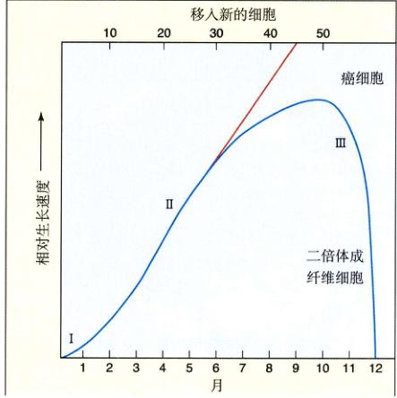图 17.27 Hayflick 的实验 在经历 50 代以后，成纤维细胞停止生长，在 I 期和 II 期生长快速，但是由于培养物的老化，III 期生长缓慢。相比较，癌细胞则不会老化。